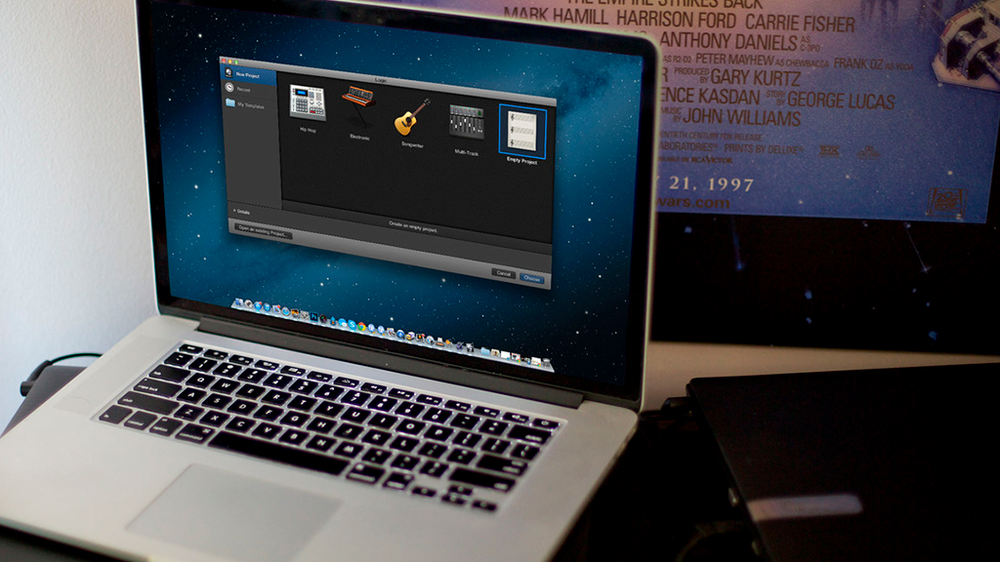
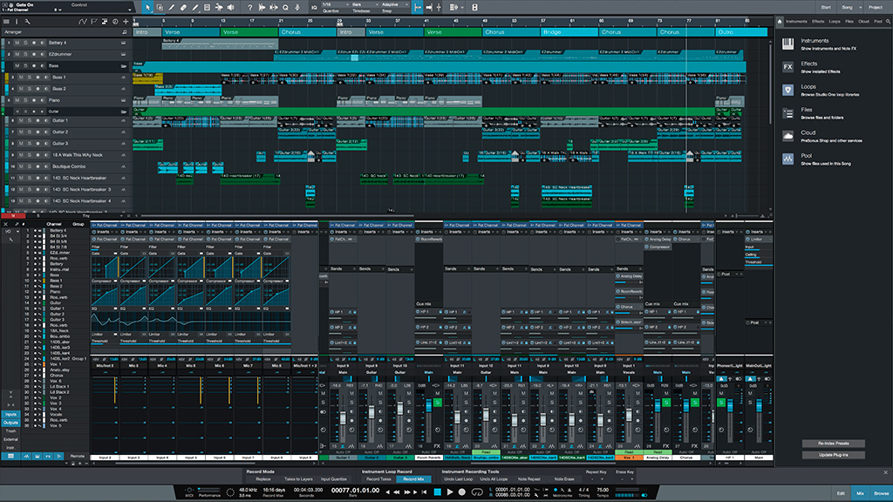
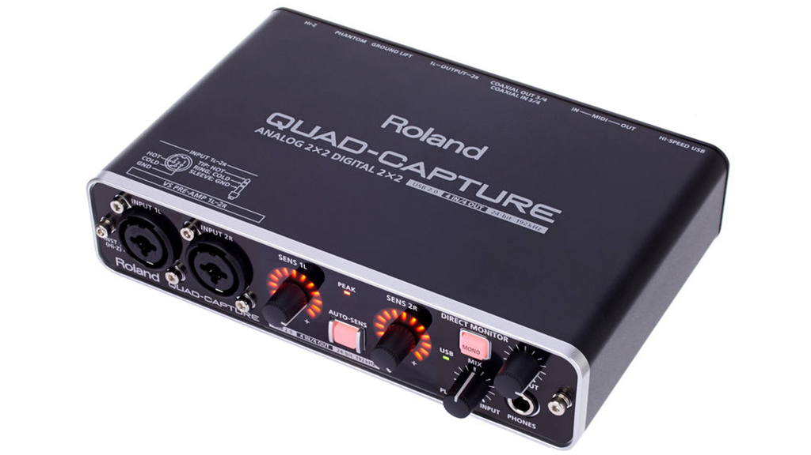
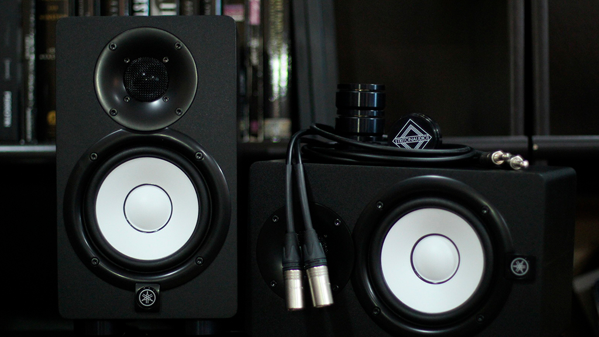
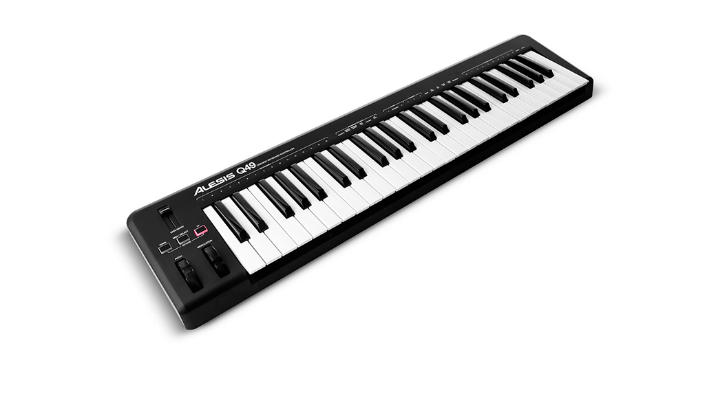

Звукозапись— процесс записи звуковых сигналов. Результатом звукозаписи является фонограмма.
Необходимое оборудование: устройство для преобразования акустических колебаний в электрический сигнал (микрофон) или генератор тона (напр. звуковой синтезатор, семплер), устройство для преобразования электрических колебаний в последовательность дискретных (цифровых) значений (в цифровой звукозаписи), устройство для сохранения (магнитофон, жёсткий диск компьютера или иное устройство для сохранения полученной информации на носитель). Звукозапись может быть монофонической, стереофонической, многоканальной.
Звукозапись— процесс записи звуковых сигналов. Результатом звукозаписи является фонограмма.
Необходимое оборудование: устройство для преобразования акустических колебаний в электрический сигнал (микрофон) или генератор тона (напр. звуковой синтезатор, семплер), устройство для преобразования электрических колебаний в последовательность дискретных (цифровых) значений (в цифровой звукозаписи), устройство для сохранения (магнитофон, жёсткий диск компьютера или иное устройство для сохранения полученной информации на носитель). Звукозапись может быть монофонической, стереофонической, многоканальной.
Курсовая работа
Звукозапись
Звукозапись— процесс записи звуковых сигналов. Результатом звукозаписи является фонограмма.
Необходимое оборудование: устройство для преобразования акустических колебаний в электрический сигнал (микрофон) или генератор тона (напр. звуковой синтезатор, семплер), устройство для преобразования электрических колебаний в последовательность дискретных (цифровых) значений (в цифровой звукозаписи), устройство для сохранения (магнитофон, жёсткий диск компьютера или иное устройство для сохранения полученной информации на носитель). Звукозапись может быть монофонической, стереофонической, многоканальной.
Что нужно для звукозаписи?
Компьютер
Программа для записи
Звуковая карта
Колонки
Наушники
MIDI-Клавиатура
